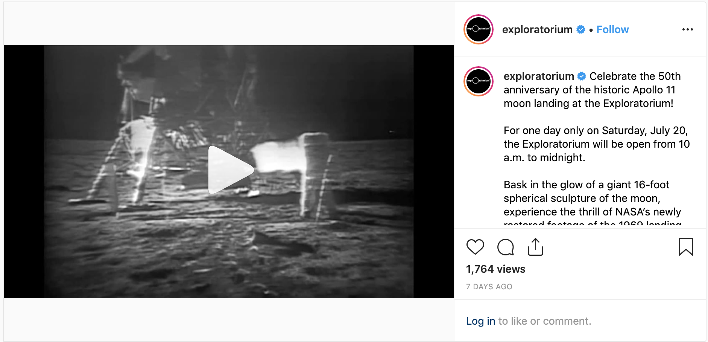

About
Just this summer, I spent my weeks barting to SF to intern at the Exploratorium—I had the opportunity of being on the MARCOMM team as a Digital Marketing Intern, working to engage online audiences and enhance the Exploratorium's digital experiences.
I focused primarily on analytics-based digital marketing, looking at multi-channel and web analytics to make data-based decisions and suggestions for the social media channels. I also expressed an interest in UX + Web Design, so I was able to work on some user-experience based projects, such as doing multiple Competitive Analyses of other museum / non-museum websites and analyzing web analytics for user trends and goals. Over the 13 weeks, my projects entailed:
Digital Marketing
- Research the basics of best practices (social media, auditing, web-form UX, landing page UX, etc.)
- Conduct monthly social media audits for Exploratorium’s core channels (Twitter, Facebook, Instagram, LinkedIn, Tumblr, Pinterest) using social media analytics; make data-based suggestions on how to increase multi-channel engagement
- Research and produce multi-channel campaign-based digital content (#MoonMonth, AfterDark, etc.)
User Experience
- Aid in usability testing by gathering URLs to test based on Google Analytics data
- Conduct Competitive Analyses on competitor sites for page redesigns
- Utilize Google Analytics (pageviews, % exit, goal flow, behavior flow, etc.) and heatmapping to analyze user behavior of current / past website pages for redesign decision-making
- Initial build of Intern Intranet page (on Alassian's Confluence) for future intern use by outlining content and wireframing layouts
Some work done—
Social Media Analytics + Audits
In order to review and revise the current social media methods used, an audit needed to be done for our current main channels. Thus, we could review what was working, what was failing, and what could be improved upon across the social media channels in order to increase engagement.
All data for the month-wide audits I conducted were gathered through social media analytics sites (Later, Twitter Analytics, FB Analytics, Pinterest Analytics, etc.) where metrics such as engagement, audience, branding, and content (UGC, video, etc.) were noted and used for overall analysis. With all accounts taken, I was able to make data-based decisions to determine and present what was working, needed to be pushed further, and could be modified for an increase in channel impressions + engagements.
Content Creation
Another aspect of Digital Marketing I was able to take on related to Social Media content creation. After researching Social Media best practices to utilize, as well as each social media channel's individual style + most engaged content type, I captured the Exploratorium voice to create written and digital content to promote upcoming events (#MoonMonth, AfterDark).

Instagram post to promote #MoonMonth highlighting the historic Apollo 11. All images—Exploratorium
Competitive Analysis
I aided in the redesigns of various Exploratorium pages (Membership, Gift, 404, etc) by researching and analyzing competitor sites for each page—gathering screenshots, links, and detailed analysis into a written report while keeping in mind the user goal. This way, before initiating other parts of the user research process, we could understand how competing organizations marketed their ideas and products online, and gather actionable insights and recommend changes to the Exploratorium sites.
Web Analytics
I really got to get my hands on Google Analytics this summer; it's such a powerful + informative tool that has so much to it in informing analysts, designers, developers, and stakeholders on how to better enhance performance on a site! To start the user research for page redesigns, I was assigned to pull data from Google Analytics in order to generate reports about how users were meeting goals, page use, and overall workings of the site.
One key insight from Google Analytics that we were able to track were user journeys + behavior across the website (with data such as the exit rate, pageviews, entrances, bounce rate; flow charts such as behavior flow, user flow, goal flow). By looking at these charts and metrics, we could see whether users were meeting user goals, interacting with the site smoothly, or instead, were encountering potential pain points.
Through Google Analytics, some insights we found included:
- Points in the user journey where users were giving up on goals / exiting the site (bounce rate / exit %)
- How users behaved at different steps of a journey (ex: buying membership—add cart, show cart, checkout, etc)
- Audience demographics (location, age group, etc); device accessed (% mobile, % desktop, etc.)
- What parts of the site were confusing / take more time to perform (user timing); how much time users took to complete a goal
- What pain points specifically hindered conversion and how we could increase it instead, whether that conversion be anything from a newsletter sign-up to a membership purchase.
Examples—Behavior Flow (Marketing Mojo) / Google Analytics Home (Segment)
Takeaways
If they ever see this—I want to thank Sewon, Klay, Crystal, Geoff, Sarah, and all the other wonderful & fun interns and staff I met along the way!
So glad to have been able to spend my first summer internship here! I was encouraged to speak up about fields I was interested in, actively take part in projects across departments, pick up tools for the first time and really get to know them (Google Analytics, Social Media Analytics, etc) and just wholeheartedly learn. I wasn't given one specific overarching project to focus on for the 13 weeks, but instead took on different projects every 2-3 weeks—jumping between Competitive Analysis to Auditing to another task—allowing me to learn through different aspects of web and digital marketing while weaving in my exisiting knowledge and skillsets.
- By actively seeking out opportunites in other fields I was interested in, I got to quickly be plugged in on projects that were outside my department. Because I'm interested in Web and Graphics, I was able to take on UX projects on top of the work I was initially assigned for, which I greatly learned from and enjoyed.
- It was so great interning at a place where I knew the work I was doing was to continue allowing the Exploratorium be a place where kids and visitors could leave inspired—that I was doing social-conscious and good work!
- Felt out of my comfort zone the first few weeks (if I'm being honest!) due to being away from Davis, working in the city, being in a team of non-college students, and just being around so many new, unfamilar faces. Really had to push myself to be ok with change, be confident in my ability to communicate with others and be comfortable with the people around me, even if I had just met them!
- I really got to see work played out on a big scale—redesigns for high-traffic webpages involving various departments, large meetings for persona building, usability tests, and more. Lots of thought, work, and understanding of audiences went into each decision made.
- Data is powerful! Analyzing data was like telling a story; x happened because of y, which could then improve existing methods or trends. I realized how impactful analytics + data was in really understanding the user, leading to good and smart user-centered decisions.

2nd day & intern lunches!
That's all I can write here, but feel free to reach out to me to talk about my work in more detail! I'd love to chat with you.